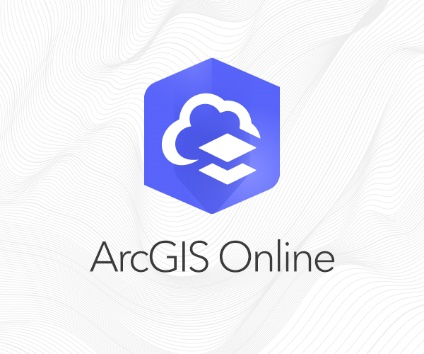
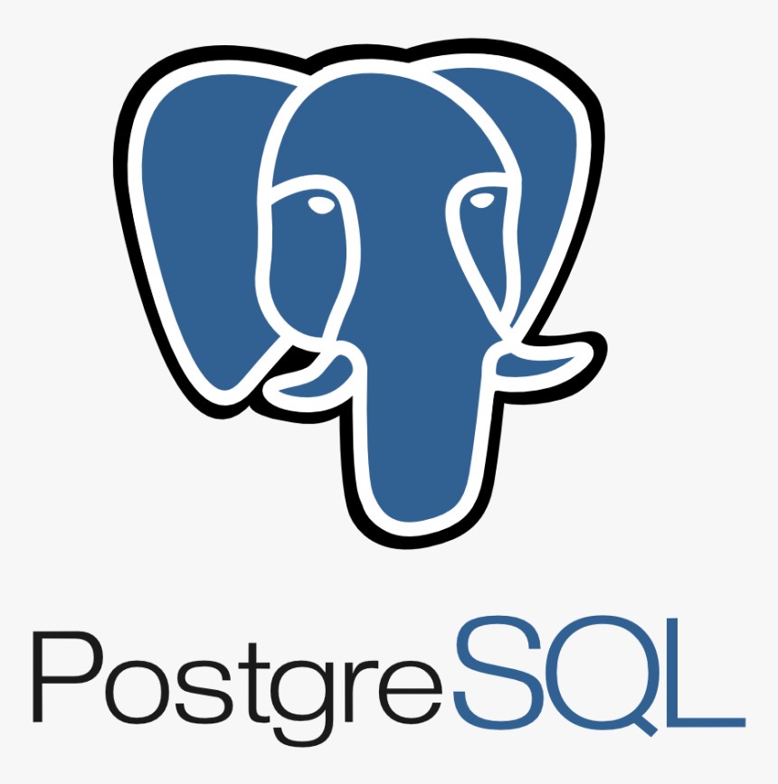
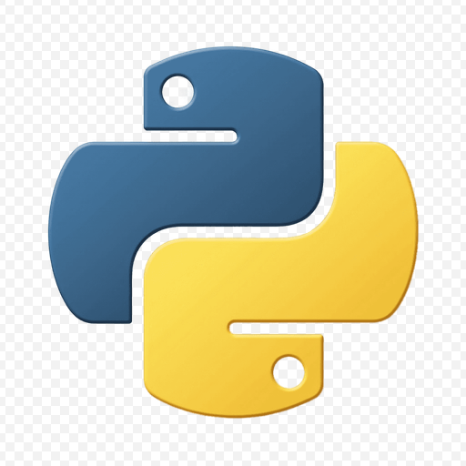
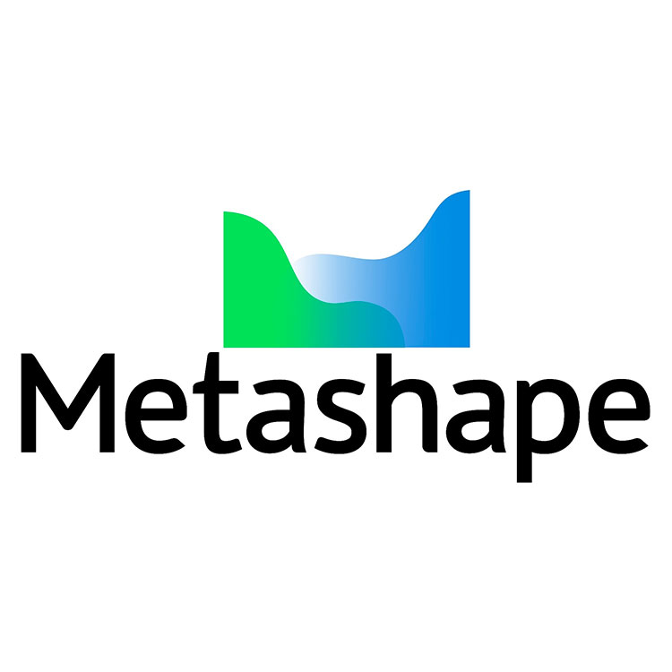

Mémoire de Master 1
Application Web AppBuilder pour l’aide à la planification des opérations d’élagage.
À propos
Géomaticienne spécialisée dans la structuration et l’analyse de données territoriales. Expérience dans le développement d’outils cartographiques et l’exploitation de systèmes d’information géographique pour accompagner la gestion et la connaissance du patrimoine. Habituée à travailler en lien avec les services métiers afin de structurer les données et améliorer les usages du SIG.
Parcours
Actuellement en Master 2 en Géomatique, Géodécisionnel, Géomarketing et Multimédia, avec approfondissement des problématiques d’analyse spatiale, de cartographie et de valorisation des données territoriales.
Formation orientée topographie, cartographie et systèmes d’information géographique, avec développement de compétences en bases de données spatiales et représentation cartographique.
Formation axée sur la topographie, les méthodes d’acquisition de données terrain et l’aménagement du territoire, enrichie par plusieurs expériences de terrain.
Participation à des projets SIG orientés analyse spatiale, cartographie web, structuration de données, automatisation de traitements géographiques et réponse aux besoins métier.
Détection et analyse des anomalies au sein de la base de données de l’assainissement non collectif, identification des incohérences et mise en place de corrections adaptées. Participation à la gestion, à la structuration et à la mise à jour des données, dans une logique d’amélioration continue de leur qualité et de leur fiabilité pour les usages métiers.
Stage de fin d’études axé sur la modélisation 3D et le traitement d’images pour la réhabilitation du patrimoine historique de la ville de Fès. Participation à la production d’orthophotos de façades et au traitement de données issues de la photogrammétrie et du scanner laser.
Initiation aux systèmes d’information géographique (SIG), analyse et traitement de données géospatiales, ainsi que participation à des projets de planification et d’aménagement du territoire.
Participation à la mise à jour des bases de données cadastrales, à la production de plans topographiques et à l’application des procédures d’immatriculation foncière.
Réalisations
Sélection de projets académiques et professionnels illustrant mes approches en analyse spatiale, cartographie, développement SIG et automatisation.
Application Web AppBuilder pour l’aide à la planification des opérations d’élagage.
Détection des anomalies et gestion d’une base de données territoriale.
Lasergrammétrie, photogrammétrie et orthophotos pour la réhabilitation du patrimoine.
Recherche de logements selon des critères spatiaux définis.
Analyse par télédétection des contrastes thermiques urbains.
Traitement de données NetCDF et cartographie sous R.
Plugin Python/QGIS pour automatiser l’analyse spatiale et les rapports.
Automatisation cartographique annuelle des anomalies réseau.
Interface web de consultation et d’affichage cartographique.
Automatisation d’analyses de proximité et d’indicateurs communaux.
Compétences
Ensemble d’outils et de technologies mobilisés dans mes projets en géomatique, cartographie, automatisation et développement web.
Cartographie, traitements et plugins.

Cartographie web et diffusion interactive.

Gestion et exploitation de bases spatiales.

Scripts, automatisation et analyse de données.
Interfaces, formulaires et cartes interactives.

Interfaces, formulaires et cartes interactives.